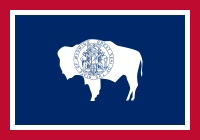

About Me
Hi! I am Carter Arnold and I live in Worland, Wyoming. A goal of mine is to go on a mission for the Church of Jesus Christ of Latter-day Saints when I turn 18. I like to solve problems, play the piano and read books. I also love playing soccer, ballroom dancing, and spending time with family.
Wyoming
Wyoming is 100 times bigger than road island but has half the population. 55% of its land is sagebrush. Wyoming contains many nationally renouned hiking trails. There is vastly more cattle than people. The population is a little more than 500,000. Worldwide Wyoming is best known for Yellowstone National Park.